Para comenzar el archivo .zip anteriormente descargado en Send Anywhere y alojado en descargas devera ser descomprimido
y para eso daras click derecho y Extraer aqui.
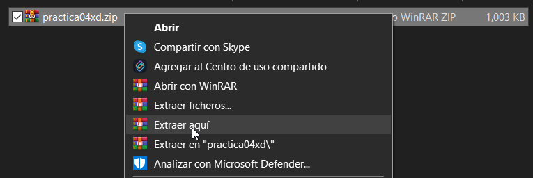
Una vez extraido mostrara la carpeta y el archivo .zip el archivo no se va a ocupar solo la carpeta.
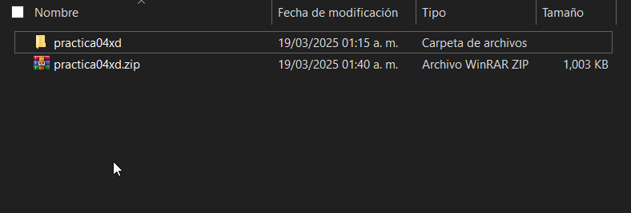
Para finalizar entramos a la carpeta precionando 2 veces sobre ella nos llevara a lo siguiente: NOTA: SE QUEDARAN HAY NO CIERREN EL EXPLORADOR YA QUE LO OCUPAREMOS MAS ADELANTE (MINIMICENLO).
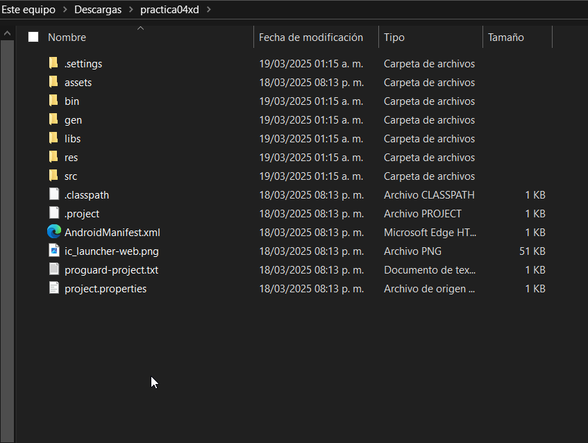
Abriremos eclise y seleccionaremos el escritorio como nuestro workspace ¡¡ESTO ES IMPORTANTE!!.
Una vez abierto el Eclipse Cerraremos el mensaje de bienvenida y hacemos lo siguiente:
Nos dirigiremos a File.
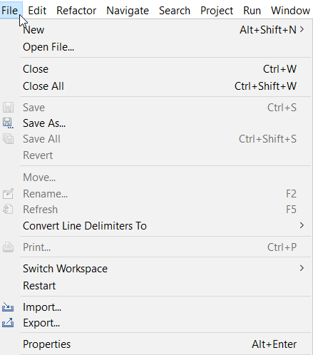
Una vez precionado File precionaremos en Import.
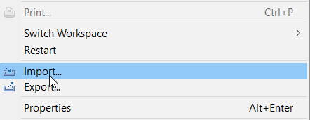
Aparecera la siguiente ventana.
Abriran la carpeta Android precionando 2 veces la carpeta o desde la flecha > al abrir la carpeta
aparecera una carpeta que dice Existing Android Code Into workspace Seleccionan la carpeta cliqueando 2 veces.
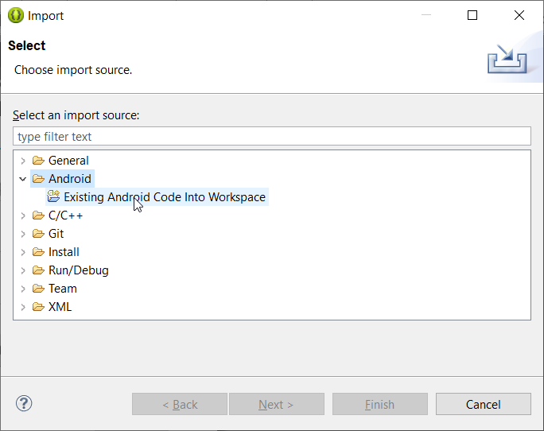
Aparecera la siguiente ventana.
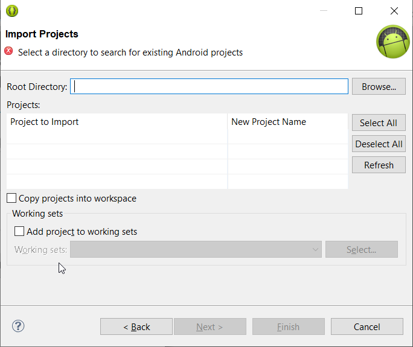
Se iran al explorador, se ubicaran en descargas donde estara la carpeta abriran la carpeta donde tiene todos los archivos del proyecto y precionaran donde esta la ruta y la copiaran toda.
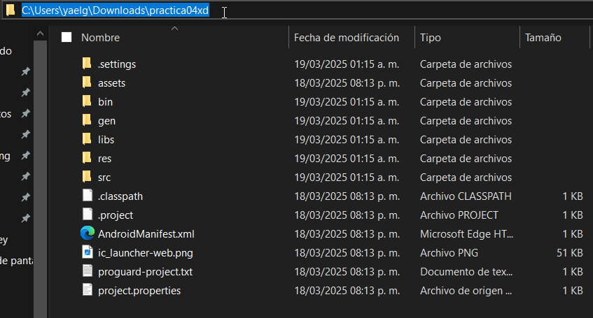
La ruta la pegaran en la ventana de eclipse en "Root Directory" y precionaran enter en Project to Import
debe aparecer la ruta de la carpeta y el cuadro debe estar seleccionado, para finalizar seleccionas Copy projects into workspace
y daras en Finish.
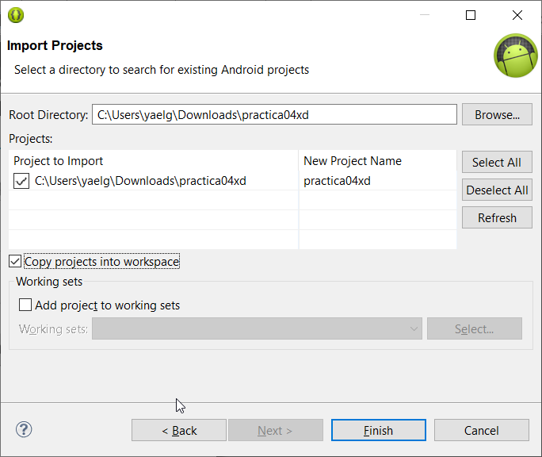
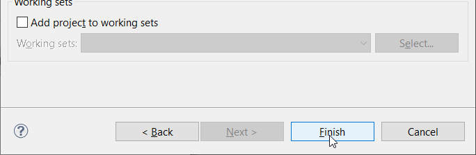
Esperaran unos minutos en lo que la carpeta se importa a nuestro workspace.
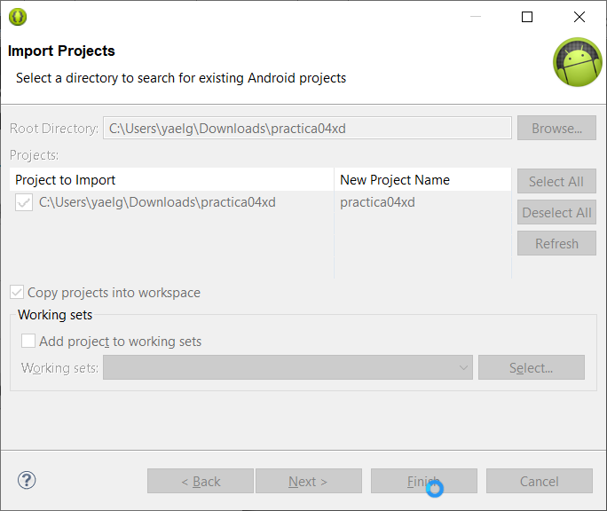
Al finalizar la ventana se quitara automaticamente y en su explorador de la parte izquierda mostrara la carpeta,
para finalizar abriran las carpetas como se muestran en la imagen y abriran todos los archivos que se encuentran en la
carpeta layout este normalmente tiene un nombre de activity_main.xml
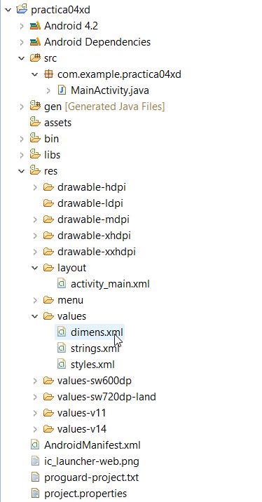
Para compilar el proyecto haran click derecho a la carpeta raíz en este caso practica04xd
y seleccionaran Run As seguido de 1 Android Application esto hara que se ejecute
el emulador del telefono si de algun caso que el emulador no se ejecute automaticamente haras lo siguiente.
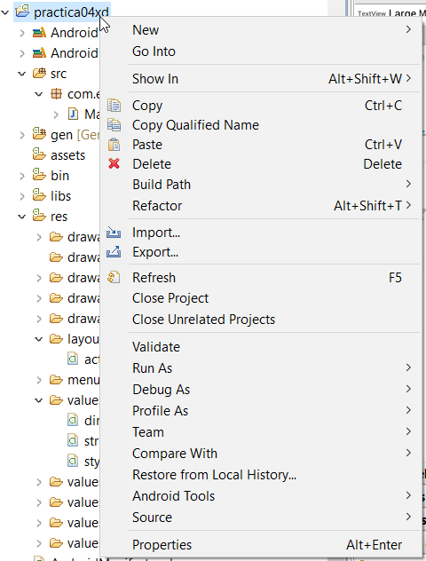
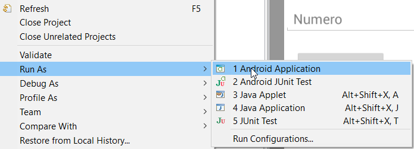
Seleccionaras el icono de un telefono.
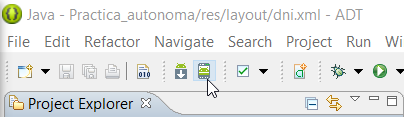
Abrira la siguiente ventana y seleccionaras el emulador en este caso se llama Emuled pero el de su maquina sera GALAXY
y le daras en Start...
Se vera la siguiente ventana y le daras a Launch.
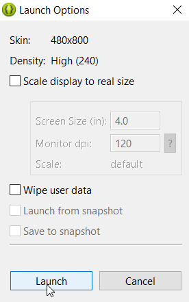
Espera unos minutos en lo que se ejecuta el emulador o AVD.
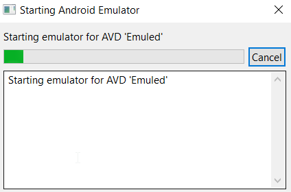
Veras como inicia el emulador, espera unos minutos hasta que el emulador finalize de cargar y vuelve a compilar el proyecto de eclipse.